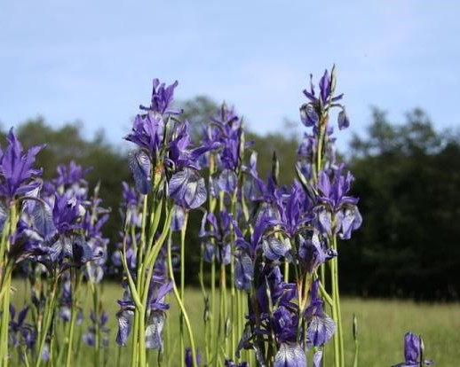
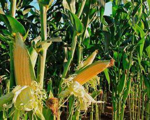
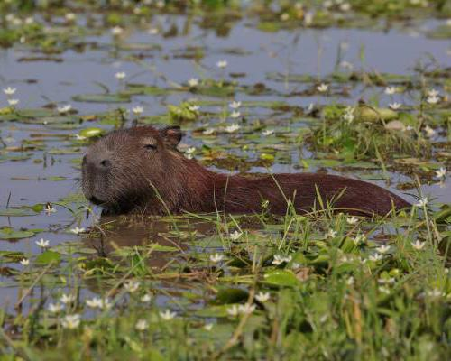

Plantas de ribera o margen.
Plantas flotantes.
Plantas para aguas profundas.
Plantas Acuáticas
Este tipo de vegetación se puede clasificar en tres grandes grupos de plantas acuáticas:

Gramíneas
Gran familia de plantas con más de 12.000 especies, siendo la mayoría de estas herbáceas y realmente importantes a nivel económico en todo el mundo.

Otros
Estos grandes roedores también consumen flores, frutos y semillas, utilizando la corteza de los árboles para roer y desgastar sus dientes incisivos.